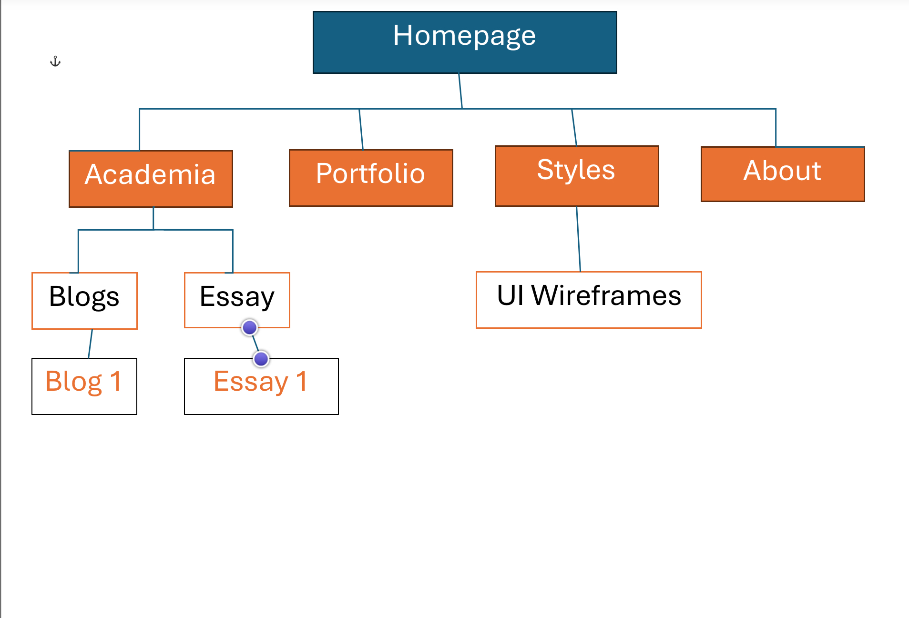
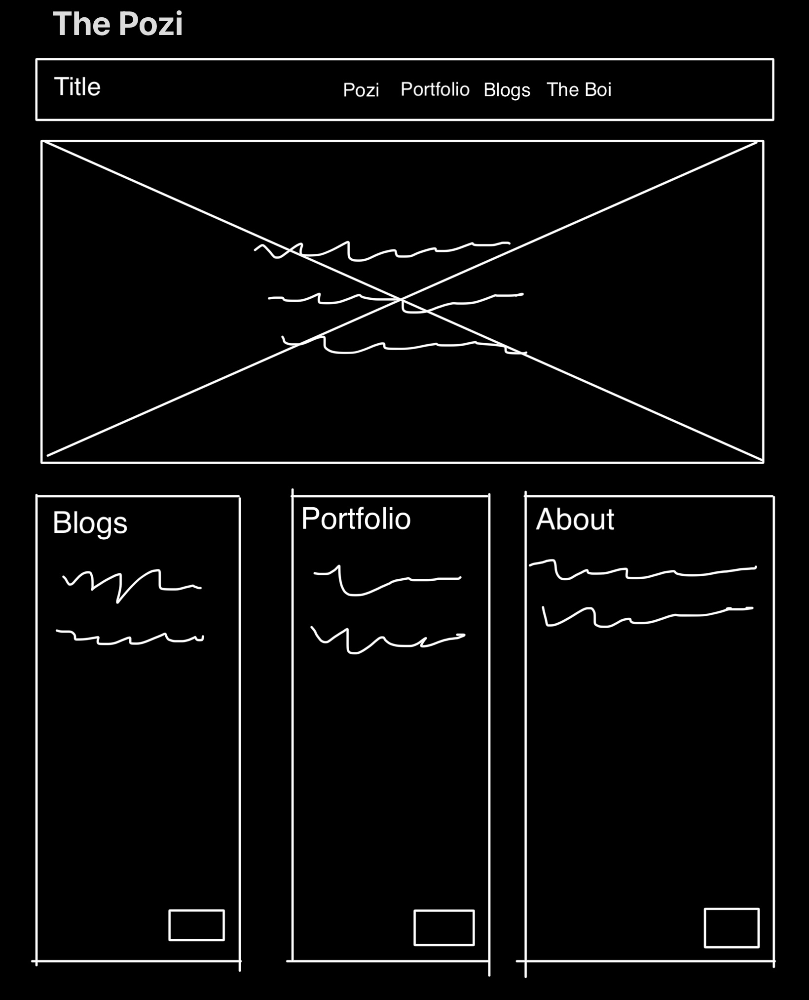
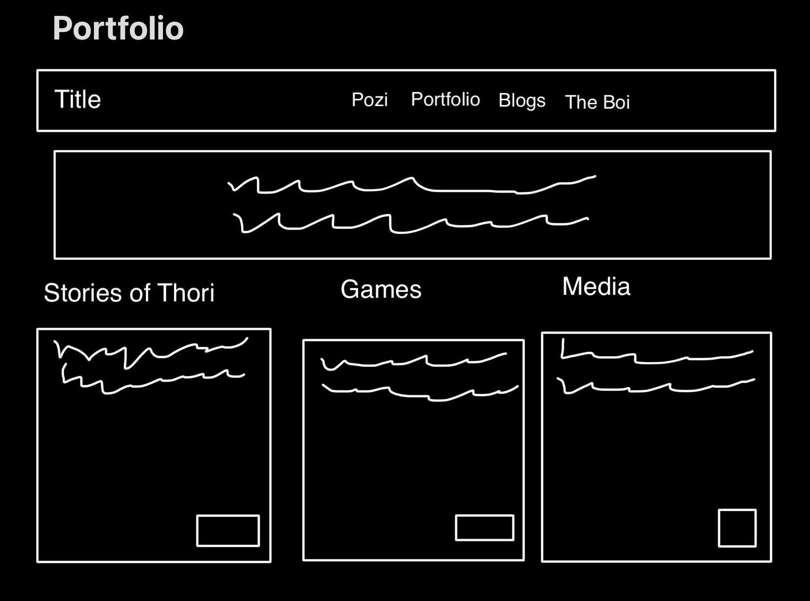
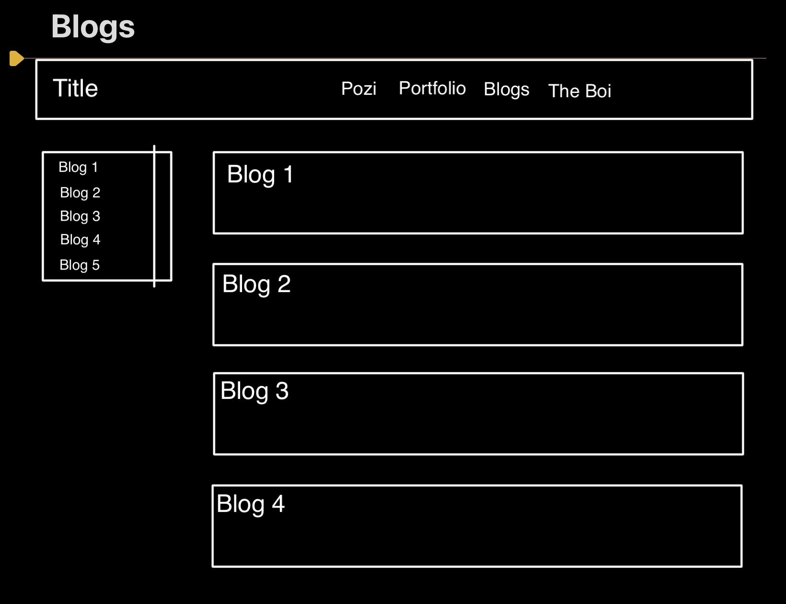
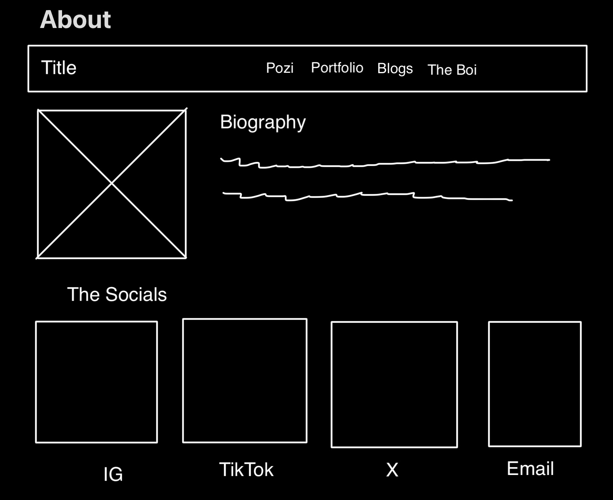
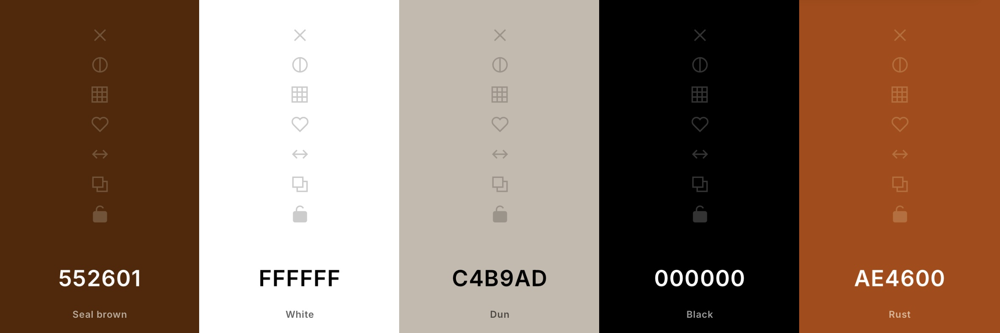
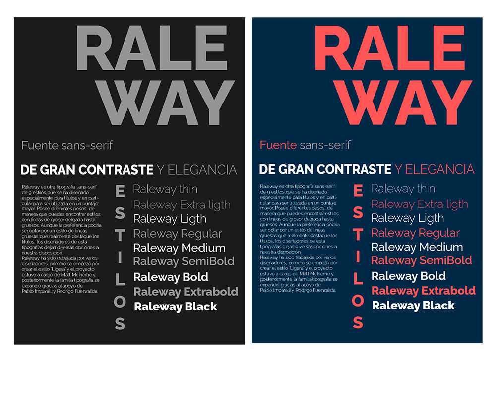
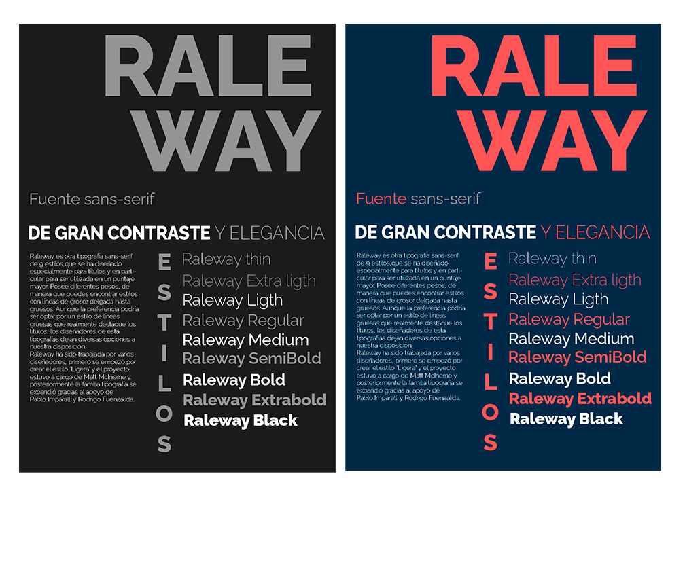

My experience with setting up Git was good but confusing due to my VS Code not having Git. However, I am very grateful that the tutors were able to help me set up my VSCode and Git. Publishing to Pages was easy, due to the use of git and the live server, it was very nice to navigate.
Alan Turing's paper asks the big question: "Can machines think?" But instead of trying to define "thinking," he suggests a simple test called the Imitation Game (now called the Turing Test).
The Imitation Game (Turing Test) - Someone asks questions of two hidden players: one human, and one machine. - If the human is unable to tell which is the machine, then the machine is "thinking" like the human.
Main Ideas in Simple Words 1. Machines Can Imitate Human Thinking - Computers accept orders, but if they are able to answer questions like the human, then they can be called intelligent. 2. Objections (Disagreements) and Turing's Responses - "Machines have no soul" - Turing claims this restricts what God would be able to do. - "Machines just follow rules, so they can't be creative" - But humans follow rules in thinking and learning too! - "Computers will never have emotions" - Turing claims that emotion is irrelevant; what does matter is whether the machine behaves like a human. - "Machines can't make mistakes" - But they can learn from errors and even "simulate" erring like a human being. Machines Can Learn! - Instead of teaching a machine to perform like an adult, why not teach it like a child? - A learning machine could improve over time, as humans do. Turing's Prediction He believed that by the year 2000, computers would be so advanced that most people would not be able to tell if they were talking to a machine or a human. Final Thought - Turing explains we should be comparing machines 'what they do' and not 'how they work' on the inside. If a machine acts like a human, then why not think that it is "thinking"?October 29th, 1991, was the start of HTML (Hypertext Markup Language) which was created by Tim Berners-Lee as it publicly links to the World Wide Web (WWW) which was also invented by Tim Berners-Lee. March 18th, 1992, was when Berners-Lee introduces the URL (Uniform Resource Locator), formally known as URI (Uniform Resource Identifier), as how web addresses are constructed as a standard to navigating decentralized networks.
My goal from this course is to develop my coding skills more and understanding the basics of web development in order to create fully functional website.
Stuart Moulthrop's essay examines the advent of hypertext and its potential as a revolutionary new medium. By using Marshall McLuhan's paradigm of media analysis, he investigates what hypertext adds, replaces, recovers, and becomes when pushed to its limits.
Hypertext's Promise - Hypertext was envisioned as an interactive, non-linear system that would allow users to read and write interactively, transcending books' rigid form. Early advocates such as Ted Nelson envisioned it as a means to democratize information, building an open and networked "docuverse" where users freely contributed and accessed information.
Commercialization & Corporate Influence - Whereas hypertext was envisioned as a device for liberation and unencumbered sharing of ideas, it soon became centralized. Rather than a people-driven revolution, big business such as Sony and AOL have come to control online spaces, controlling access to content.
Hypertext vs. Traditional Media - Moulthrop argues that hypertext is not replacing books but television, as young consumers spend more time using electronic content than watching TV. But instead of a decentralized system, we have a Web dominated by influential platforms driving the flow of information, much like traditional broadcast networks.
Reversal of Hypertext's Vision - McLuhan's point that media revolve around when pushed to their limits is obvious: hypertext, as an interactive medium, has become homogenous and hegemonic. Instead of an interactive, user-defined web, it has become a passive consumption system through corporate-owned platforms.
Future of Hypertext - Hypertext is still capable of a true information revolution, but it requires structural transformation to prevent monopolization and ensure real participation. The dream of an interactive, decentralized virtual world remains possible if users reclaim control over content creation and delivery.
Relevance to the Internet Today
Centralization of the Web - Concerns expressed by Moulthrop in terms of corporate control are even more relevant today. The likes of Google, Facebook, and Amazon mediate electronic interactions the same way broadcast systems controlled television.
Social Media & Information Control - Although the Web enables people to create content (social media, blogging, YouTube), corporate control and algorithms dictate visibility, typically limiting true participatory debate.S\
The War Between Open and Closed Systems - The early vision of an open exchange of ideas on the Internet is now in opposition to closed systems (social media, streaming) with profits and engagement at their core instead of open knowledge sharing.
Hypertext in Modern Forms - Hypertext has moved beyond webpages to new digital formats such as interactive media, video games, and AI-narratives. The shift towards multimedia and AI-generated content is now challenging what the future of user agency and digital literacy will be.
Decentralization Movements - Efforts like blockchain-powered networks and open-source platforms (Mastodon, peer-to-peer web architecture) are attempting to restore the original decentralized hypertext vision but are being met with resistance by corporate internet oligarchs. Moulthrop's critique of the failed "hypertext revolution" is still current today, because the battle between open, user-driven media and corporate control continues to be central to the digital agenda. The question lingers: can the Web ever achieve its revolutionary potential, or will it prove just another centralized, consumer-driven medium?

   
The Pozi/HomePage - This page will be the first time viewing of the overall functionality of the website and how to navigate the webpage
Great Works/Portfolio - This page will showcase may great works in many forms such as game design, interactive and storytelling writing and other forms of digital media.
Academia/Blog - This page will demonstrate the academia part of the website such as blog posts and essays
About - This page will show the biography and the contact information of myself like social media handles and contact info
Interaction and the WWW is a reflective analysis of interactivity on the internet, incorporating perspectives from noted thinkers like Aaron Smuts, Lev Manovich, Espen Aarseth, and Gonzalo Frasca. It challenges the broad use of "interactivity" and reduces it to something more meaningful—requiring responsiveness, non-random behavior, and nontrivial effort that alters the experience.
Most insightful is the discussion of types of user interactions—mouse events, keyboard events, form events, and UI events—that all shape digital experiences. The emphasis on how interaction can control, guide, and create meaning is thought-provoking, as it reminds us that web design is not just an exercise in usability but in meaningful influence.
In general, this reflection accentuates the interactive nature of digital interactivity and the necessity of interpreting how users engage with technology. It's a great foundation for critical thinking about how digital worlds are established and experienced.
According to Ramotion, User Alignment in web design is an arrangement of visual elements, such as text, images, and components, to create a structured, balanced, and aesthetically pleasing layout. The purpose of my user alignment is to create an easy and functional user experience for the user.
How I intend on achieving this is to focus on functionality over form, making it easier for the user to navigate through the website without a lot of scrolling and shifting.

I am still trying to figure out so stuff about my file structure and html functionality but this is the basic structure that I have so far.
The purpose of a portfolio website should be to work in conjunction with showcasing the skillset, competence, and reputation of the creator and offering a captivating and fluid user experience. It must pass on the message of the subject's expertise correctly through visual layout, easy to navigate, and interactive elements highlighting primary projects. It must be accessible, responsive, and easily discoverable too in order to attract the relevant audience, that is, future clients, business owners, or co-operators. By striking a balance between aesthetics and functionality, a neatly aligned portfolio site can be an effective tool for professional development and networking.

 

Studying web design has been an enjoyable and rewarding experience. The internet is an ever-evolving entity, and learning how websites are designed, structured, and optimized has given me a greater respect for the cyber world. It is fascinating to observe how an effectively structured site can boost satisfaction among users, display information succinctly, and even impact what people think about a company or individual. Learning the fundamentals of web design not only enhanced my technical knowledge but also improved my understanding of how the virtual world operates and how it interacts with users.
My earlier experience in CAT has introduced me to HTML as second nature and intuitive. Understanding the fundamental operations of the computer and how it handles and displays information has served me well, making it easy to grasp concepts of HTML. Structuring pages, placing elements in it, and placement of content has been straightforward steps, verifying the importance of sensible organization in designing web pages. HTML itself only provides the mere structure of a web page, but I also hope to verify how other facilities like CSS and JavaScript can aid in enhancing form and functionality.
Functional and not form, and simplicity in place of complexity are factors in which I extremely stress regarding philosophy in web designing. A site should be easy to use, efficient at delivering content, and accessible to the masses. Aesthetics are important but never at the cost of usability. An ordered and tidy site enables users to find what they need without effort. The idea of "less is more" resonates with me, because cluttered designs confuse users and diminish the productivity of a site. I plan to create websites that are aesthetically pleasing yet not complex, where every design choice serves a concrete purpose.
I look forward to learning CSS and JavaScript in the future as a way to further enhance web designing. Just as HTML provides one with a strong foundation, CSS will allow me to get more precise with the presentation of my site through looks, introducing structure to layout, color, text, and responsiveness. JavaScript, though, will be used to create interactivity and dynamic aspects that enable me to build interactive user experiences. Once I master these technologies, I will be able to build an even-balanced and operational website that is not just visually pleasing but also dynamic and user-centric.
Overall, this web design journey has been an exhilarating and educational experience. Every step, from coding a webpage in HTML to laying out future improvements in CSS and JavaScript, has only served to reinforce my passion for creating successful and well-crafted digital communities. I can only keep the learning process going, refine my skills, and ultimately build sites that do my philosophy of function and simplicity justice.